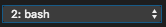
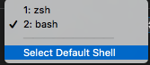
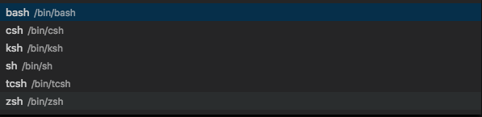
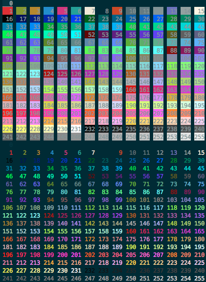

What is the bashrc file
These files are loaded when you start a terminal session.
You can use them to personalize your prompt, define alias to shorten commands, and store commonly used functions to make life easier.
Where are bashrc files located.
For bash in cd /etc
For oh_my_zsh in cd ~ also known as home directory
How to edit bashrc files in the terminal
Bash sudo vim /etc/bashrc
Oh My Zsh sudo vim ~/zshrc
Installing zshrc
More later...
Letting terminal know which bash you will use.
In terminal and Iterm
bash chsh -s /bin/bash && exit This will set the bash and then exit so we can restart terminal with the new bash
bash chsh -s /bin/zsh && exit This will set the bash and then exit so we can restart terminal with the new bash
In VS Code
Open a terminal by holding control + ~(the tilda key)
Click on the shell button
Select default Shell
Choose the shell you want from the list
Close the terminal Control + b and reopen with Control + ~
Adding alias to bash
Adding color to the prompt
This is mostly meant for default bashrc as oh my zsh comes with its own themes
Below are all the color options available for bash on systems with 256 colors enabled.
More about color later
Creating useful Functions
More later